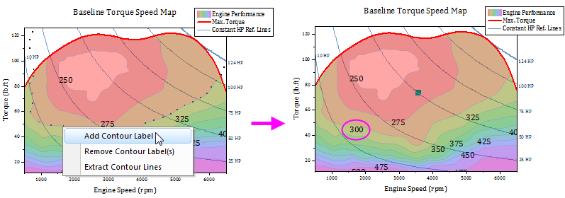

FAQ-890 Wie füge ich eine "fehlende" Konturbeschriftung an einer spezifischen Stelle hinzu?
Add-Contour-Label
Letztes Update: 10.03.2021
Das Ändern der Skalierung oder Grenzen von Konturachsen kann Probleme bei der Anzeige der Konturbeschriftungen innerhalb des neu definierten Skalierungsbereichs verursachen. Ihnen stehen ein paar Vorgehensweisen zur Verfügung:
Konturbeschriftungen bei spezifischen Stellen im Diagramm manuell hinzuzufügen
In diesem Diagramm wird die Ebenenbeschriftung 300 nicht in der von uns festgelegten Skalierung angezeigt. Um diese "fehlende" Konturbeschriftung für die Ebene 300 hinzuzufügen:

- In Version 2021 und älter klicken Sie dreimal auf die Ebenenkontur 300, um die Linie auszuwählen. In 2021b und höher drücken Sie Strg + Shift und klicken Sie auf die Ebenenkonturlinie 300, um sie auszuwählen.
- Klicken Sie bei ausgewählter Konturlinie mit der rechten Maustaste auf die Stelle, an der Sie die Beschriftung hinzufügen möchten und wählen Sie im Kontextmenü Konturbeschriftung hinzufügen. Beachten Sie, dass die neue Beschriftung per Ziehen verschoben werden kann, um ihre Position anzupassen.

Alle Beschriftungen im Diagramm neu zeichnen
Sie können Origin auch veranlassen, die Beschriftungen innerhalb des neu definierten Bereichs neu zu zeichnen.
Vor Origin 2020
- Klicken Sie zum Öffnen des Dialogs Details Zeichnung doppelt auf das Konturdiagramm. Klicken Sie auf der Registerkarte Farbpalette/Kontur auf die Spaltenüberschrift Beschriftung, um den Dialog Konturbeschriftungen zu öffnen.
- Wählen Sie die Option Alle verbergen (bitte deaktivieren Sie die Option Nur auf Hauptebenen zeigen zuerst, sollte sie aktiviert sein). Klicken Sie auf OK, um zum Dialog Details Zeichnung zurückzukehren.
- Klicken Sie auf Anwenden und öffnen Sie die Konturbeschriftungen dann erneut.
- Aktivieren Sie das Kontrollkästchen Nur auf Hauptebenen zeigen und klicken Sie zweimal auf OK, um den Dialog Details Zeichnung zu schließen.
Version 2020 und höher
- Klicken Sie einmal auf das Konturdiagramm, um die Minisymbolleiste anzuzeigen und deaktivieren Sie die Schaltfläche Konturbeschriftungen zeigen
 und aktivieren Sie sie wieder.
und aktivieren Sie sie wieder.
- Alternativ klicken Sie auf die Schaltfläche Beschriftungen neu positionieren
 (erfordert Origin 2021b oder höher).
(erfordert Origin 2021b oder höher).
Schlüsselwörter:Zeichnung, Kontur, Beschriftung